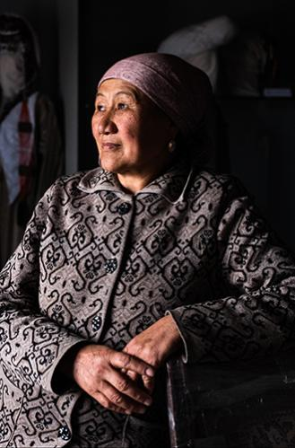

Kerjasama Bilateral adalah kerjasama dan upaya antar 2 negara untuk mencapai suatu tujuan bersama yang saling menguntungkan. Bentuk kerjasama ini bisa mencakup berbagai bidang seperti pendidikan, ekonomi, keamanan, kebudayaan, dan lain-lain. Tujuan utama kerjasama Bilateral ini adalah untuk memperkuat hubungan kedua negara dan meningkatkan kesejahteraan rakyat. Kebanyakan kerjasama dan hubungan internasional antar negara diselenggarakan secara Bilateral atau Multilateral. Pada dasarnya, kerjasama antar dua negara atau kerjasama Bilateral adalah kunci untuk meningkatkan kondisi ekonomi. Contoh nyata dari testimoni tersebut adalah India dan Nepal yang sudah menjalankan hubungan ini sejak zaman kuno, bahkan sebelum kelahiran Buddha pada tahun 563 SM. Hubungan tradisional ini telah dikukuhkan dengan perjanjian tertulis yang disebut The India-Nepal Treaty of Friendship; ditandatangani pada bulan Juli 1950.
Sumber: https://www.undp.org/sustainable-development-goals/no-poverty?form=MG0AV3
Dari sumber Goal 1: No poverty | United Nations Development Programme, menyoroti pentingnya kerjasama antar negara-negara untuk memobilisasi sumber daya, meningkatkan kapasitas lokal, dan mendukung pembangunan berkelanjutan. Kerjasama bilateral antara negara-negara maju dan negara yang negara berkembang seringkali melibatkan bantuan pembangunan, pelatihan keterampilan masyarakat, dan pertukaran teknologi untuk mengurangi kemiskinan dan meningkatkan kesejahteraan masyarakat. Pada dasarnya, memberantas kemiskinan masih menjadi hal yang elusif untuk dicapai. Meskipun presentasi kemiskinan telah turun lebih dari separuh dari tahun 1990 ke tahun 2015, masih banyak sekali orang yang berjuang untuk bahkan menafkahi hidupnya dan memenuhi kebutuhan dasar manusianya.
Pada tahun 2015, 736 juta orang hidup dengan kurang dari $1,90 per hari, dan tidak memiliki akses terhadap makanan, air, dan sanitasi. Tiongkok dan India telah membuat kemajuan signifikan dalam mengangkat jutaan orang keluar dari kemiskinan, tetapi perempuan lebih mungkin jatuh ke dalam kemiskinan karena pendapatan, pendidikan, dan properti yang lebih rendah. Di wilayah seperti Asia Selatan dan Afrika sub-Sahara, kemajuannya lambat.

Sumber: https://www.indrakarya.co.id/index.php/id/2023/11/16/pertemuan-bilateral-indonesia-dan-jepang-di-bidang-infrastruktur/
Kerjasama Bilateral yang dijalin oleh Indonesia dan Jepang dalam meningkatkan dan pembuatan
proyek infrastruktur juga mengatasi kemiskinan. Direktur utama PT Indra Karya hadir dalam pertemuan
Bilateral Indonesia dan Jepang dalam bidang infrastruktur yang diadakan di Tokyo, Jepang. Kunjungan ini
dilaksanakan dalam rangka studi banding terkait pengelolaanya proyek-proyek penanggulangan banjir
melalui metode underground channel,